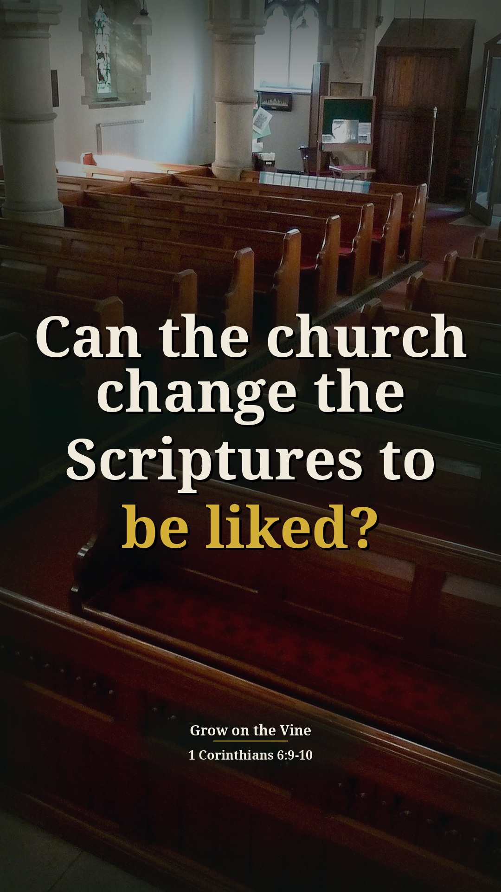
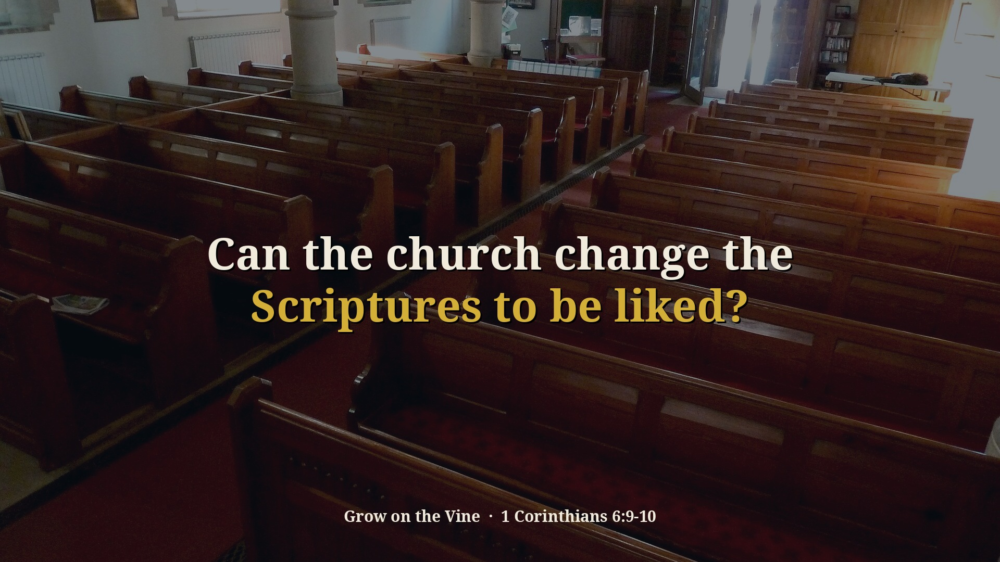
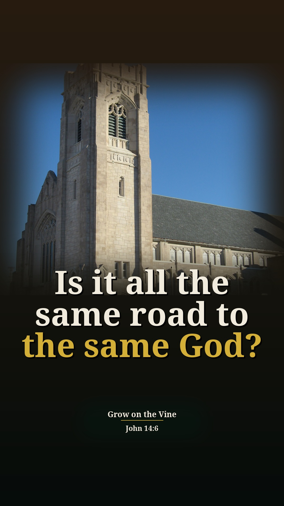
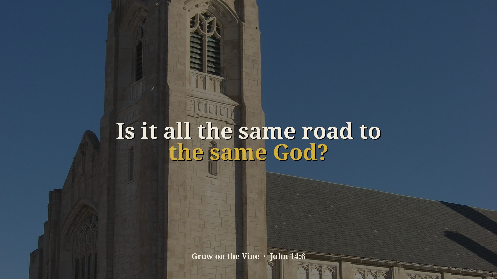

Division Part 1 — 2 new context Shorts (preview)
Preview only, not posted anywhere. Source: 34dKzwX6zgQ · Pastor David G. Kincer. New Shorts from passages on sin and other religions that were skipped before. Each one includes the earlier or surrounding part of the sermon that explains why he says it. Each card follows the clip-page order: video → short answer → his words → Scripture (NKJV) → full message.
Can the church change the Scriptures to be liked?
Context included: 0:00–0:39 the new book "You Lost Us" blaming the church for young people leaving, and 2:54–3:04 the interviews of young people on why they left. That is the charge he is answering when he gets to "the church is intolerant" (5:57).
Watch the clip
Our short summary of this clip, not the preacher's exact words
Short answer: No. A book blamed the church for young people leaving, saying the church is intolerant and hard on homosexuals and abortion. He answers that the church can't change the Scriptures because public policy says these things are okay: the Bible says homosexuality is a sin, and the church must preach it whether young people like it or not.
Why: He is answering the book's charge that the church is intolerant; his ground is that the Scriptures don't change.
“There's a new book out called You Lost Us.”
▶ 0:00
“They said the third thing is, which should have been the first thing, is the church is intolerant. And then they describe in that we are hard on the homosexuals, and hard on abortion.”
▶ 5:57
“You can't change the scriptures because public policy says that these things are okay.”
▶ 6:15
“When the Bible says that homosexuality is a sin. And you will go to hell for it. The church can't change the scriptures.”
▶ 6:25
“And if they want to blame us for wanting to protect the life of innocent kids from abortion on demand, then that's their problem.”
▶ 6:41
1 Corinthians 6:9-10 Do you not know that the unrighteous will not inherit the kingdom of God? Do not be deceived. Neither fornicators, nor idolaters, nor adulterers, nor homosexuals, nor sodomites, nor thieves, nor covetous, nor drunkards, nor revilers, nor extortioners will inherit the kingdom of God.
Romans 3:4 Certainly not! Indeed, let God be true but every man a liar. As it is written: “That You may be justified in Your words, And may overcome when You are judged.”
Full sermon: Division Part 1 — full message page


Other title options:
- Is the church really intolerant?
- Why do young people blame the church?
YouTube description (draft)
Can the church change the Scriptures to be liked? Read the short answer, the Scripture (NKJV) and the pastor's own words: https://growonthevine.com/clips/can-the-church-change-the-scriptures/ To see the full message, click here: https://www.youtube.com/watch?v=34dKzwX6zgQ&t=0s No. A book blamed the church for young people leaving, saying the church is intolerant and hard on homosexuals and abortion. He answers that the church can't change the Scriptures because public policy says these things are okay: the Bible says homosexuality is a sin, and the church must preach it whether young people like it or not. 1 Corinthians 6:9-10 (NKJV) Pastor David G. Kincer · Grow on the Vine Music: "Inspired" Kevin MacLeod (incompetech.com) Licensed under Creative Commons: By Attribution 4.0 License http://creativecommons.org/licenses/by/4.0/ #Shorts #Bible #Jesus
Is it all the same road to the same God?
Context included: 17:49 Paul's question "Were you baptized in Paul's name?" (1 Cor 1:13), the verse he is teaching from, leads into why Mormons re-baptize. Later (20:13–20:47) he returns to it: Jesus was baptized, and baptism is for remission of sin.
Watch the clip
Our short summary of this clip, not the preacher's exact words
Short answer: No. He says Mormons and Muslims are not Christian: Mormons re-baptize people who join them and don't believe Jesus is God, and Muslims say Christ did not die on the cross and don't baptize in water. So it is not all the same road to the same God; Jesus is God, and we can't change the Scriptures.
Why: Teaching 1 Corinthians 1:13 (were you baptized in Paul's name?), he contrasts what other religions teach with what the Bible says about Jesus.
“Were you baptized in Paul's name?”
▶ 17:49
“And the reason I know they're not Christian is Mormons, if you join their group, you have to get re-baptized.”
▶ 18:08
“Muslims say that Christ did not die on the cross. Well, you just threw the whole Bible out.”
▶ 18:53
“So it's not all the same road to the same God, is it?”
▶ 19:10
“Jesus is God. If you know Jesus, you know God.”
▶ 19:44
John 14:6 Jesus said to him, “I am the way, the truth, and the life. No one comes to the Father except through Me.
1 Corinthians 1:13 Is Christ divided? Was Paul crucified for you? Or were you baptized in the name of Paul?
Acts 2:38 Then Peter said to them, “Repent, and let every one of you be baptized in the name of Jesus Christ for the remission of sins; and you shall receive the gift of the Holy Spirit.
Full sermon: Division Part 1 — full message page


Other title options:
- Do all religions believe Jesus is God?
- Why does baptism matter?
YouTube description (draft)
Is it all the same road to the same God? Read the short answer, the Scripture (NKJV) and the pastor's own words: https://growonthevine.com/clips/is-it-all-the-same-road-to-the-same-god/ To see the full message, click here: https://www.youtube.com/watch?v=34dKzwX6zgQ&t=1069s No. He says Mormons and Muslims are not Christian: Mormons re-baptize people who join them and don't believe Jesus is God, and Muslims say Christ did not die on the cross and don't baptize in water. So it is not all the same road to the same God; Jesus is God, and we can't change the Scriptures. John 14:6 (NKJV) Pastor David G. Kincer · Grow on the Vine Music: "Morning" Kevin MacLeod (incompetech.com) Licensed under Creative Commons: By Attribution 4.0 License http://creativecommons.org/licenses/by/4.0/ #Shorts #Bible #Jesus